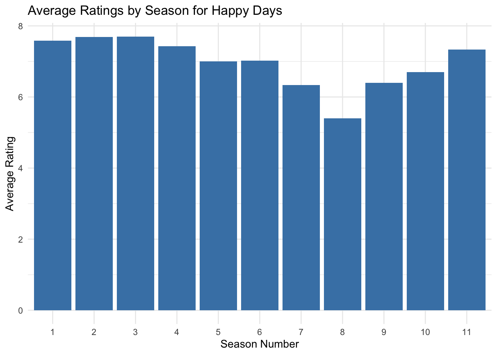
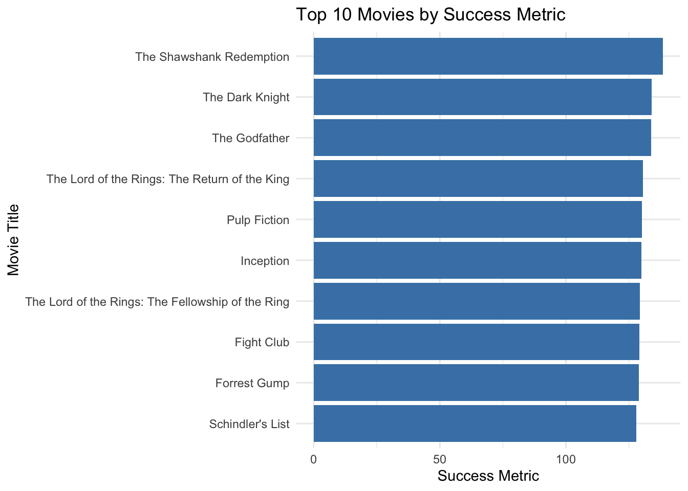
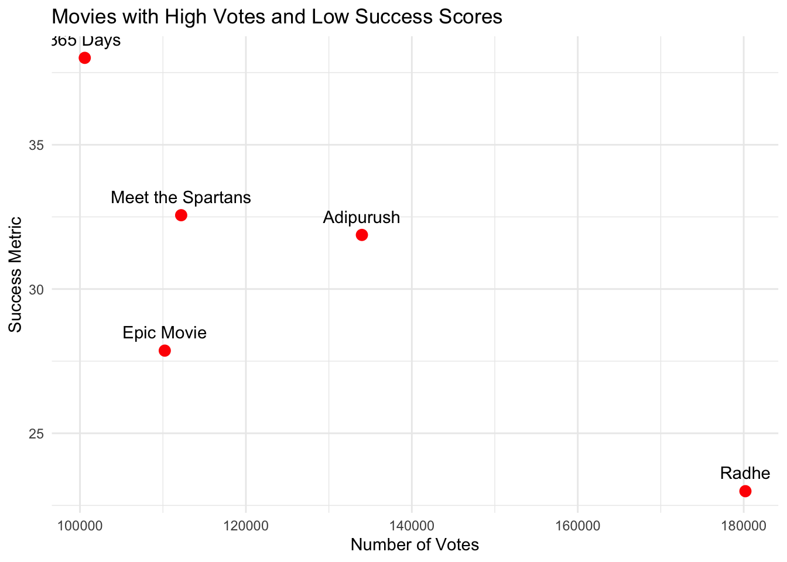

get_imdb_file <-function(fname){# Set the base URL to the professor's GitHub BASE_URL <-"https://raw.githubusercontent.com/michaelweylandt/STA9750/main/miniprojects/mini02_preprocessed/" fname_ext <-paste0(fname, "_small.csv.zip") # Use the correct .csv.zip extension# Check if the file exists locally, if not download itif(!file.exists(fname_ext)){ FILE_URL <-paste0(BASE_URL, fname_ext)download.file(FILE_URL, destfile = fname_ext)message(paste("Downloaded:", fname_ext)) }# Read the .csv file directly from the .zip data <- readr::read_csv(fname_ext)return(as.data.frame(data))}# Load the pre-processed datasetsNAME_BASICS <-get_imdb_file("name_basics")TITLE_BASICS <-get_imdb_file("title_basics")TITLE_EPISODES <-get_imdb_file("title_episodes")TITLE_RATINGS <-get_imdb_file("title_ratings")TITLE_CREW <-get_imdb_file("title_crew")TITLE_PRINCIPALS <-get_imdb_file("title_principals")
Pre-Processed Data has been loaded successfully.
Initial Exploration
To better understand the structure of the data, we will use the glimpse function from the dplyr package to examine each table. This will provide insight into the number of columns, column names, and their respective data types for each dataset.
Most columns appear to be read in as character(string) vectors, but should be numeric. The “null” values are represented as \N, which R does not recognize as NA values.
Using the mutate and the as.numeric commands to change th types of columns.
Starting with the NAME_BASICS table - taking character columns and converting to numeric, where needed.
Moving on to the TITLE_BASICS table. For this one, we adjust two columns from character to numeric. One new fix we are making it taking the isAdult column and converting it from numeric (with values 0 or 1) and converting it to logical (TRUE/FALSE values). This way we will not have to remember how 0 and 1 are defined as TRUE/FALSE values.
The next table to clean would be the TITLE_RATINGS table. The three columns have the correct datatypes so this table is skipped.
The writers column in the TITLE_CREW table has several \N values which need to be replaced with NA. We will maintain the writer column’s type. This is done in the step below.
The last table left for cleaning is the TITLE_PRINCIPALS table. We will replace the \N values in the job and characters column with NA, while maintaining the columns’ data type.
# Creating summary tablesummary_table <-data.frame('Movies'= num_movies,'TV Series'= num_tv_series, 'TV Episodes'= num_tv_episodes)# Formatting summary table with gtsummary_gt <- summary_table |>gt() |>tab_header(title ="Total Movies, TV Series and Episodes" ) |>fmt_number(columns =everything(),decimals =0 )# Display the tablesummary_gt
Total Movies, TV Series and Episodes
Movies
TV.Series
TV.Episodes
131,662
29,789
3,007,178
The code below answers the question of who the oldest living person in our data set is. We first access the oldest living person from the NAME_BASICS dataset and then format the result into a table using gt.
To access the oldest living person in the NAME_BASICS dataset, the code below filters to find the person with the maximum birthYear where deathYear is NA.
Code
# Filter out people with valid birthYear and living (i.e., deathYear is NA or equal to "NA")oldest_living_person <- NAME_BASICS |>filter(!is.na(birthYear) &is.na(deathYear) & birthYear >=1900) |>arrange(birthYear) |>slice(1) |>select(primaryName, birthYear)# Create a table and format it using gtoldest_living_person_tb <- oldest_living_person |>gt() |>tab_header(title ="Oldest Living Person in Dataset" ) |>cols_label(primaryName ="Name",birthYear ="Birth Year" ) |>fmt_number(columns =c(birthYear),decimals =0,use_seps =FALSE )# Displaying the tableprint(oldest_living_person_tb)
Oldest Living Person in Dataset
Name
Birth Year
Léonide Azar
1900
Next we aim to find the TV Episode with a perfect 10/10 rating and 200,000 IMDb ratings. To do so, we will need to access the TITLE_RATINGS, TITLE_BASICS, and TITLE_EPISODES tables.
The code below filters the TITLE_RATINGS table for the episode with a 10/10 rating and at least 200,000 IMDb ratings.
It then joins this filtered set of the TITLE_RATINGS table with the TITLE_BASICS table to access the show’s title and series. “tconst” is the unique identifier for the episode’s title we use to join. We use an inner join, so only rows that match in both tables are included.
The second inner_join joins the result of the first join to TITLE_EPISODES. This is to be access the series name of the episode.
The final inner_join with TITLE_BASICS retrieves the series name by matching the “parentTconst” of the episode to “tconst” of the series in the TITLE_BASICS table.
We then use the select function to select only the relevant columns for our dataframe. We finally rename these columns to allow for more descriptive column names.
Code
# Filter for episodes with a perfect 10/10 rating and >= 200,000 votesperfect_episode <- TITLE_RATINGS |>filter(averageRating ==10, numVotes >=200000) |>inner_join( TITLE_BASICS |>filter(titleType =="tvEpisode"), by ="tconst" ) |>inner_join(TITLE_EPISODES, by ="tconst") |>inner_join( TITLE_BASICS |>filter(titleType =="tvSeries"), by =c("parentTconst"="tconst") ) |>select(primaryTitle.x, primaryTitle.y, titleType.x, averageRating, numVotes)# Rename the columns for better understanding perfect_episode <- perfect_episode |>rename(episodeTitle = primaryTitle.x,seriesTitle = primaryTitle.y,episodeType = titleType.x )
The below code creates a summary table of our results.
Code
# Create the summary table with gtperfect_episode_tb <- perfect_episode |>gt() |>tab_header(title ="Highly Rated TV Episode" ) |>cols_label(episodeTitle ="Episode Title",seriesTitle ="Series Title",episodeType ="Type",averageRating ="Rating",numVotes ="# Votes" ) |>fmt_number(columns =c(averageRating, numVotes),decimals =0 )# Display the tableprint(perfect_episode_tb)
Highly Rated TV Episode
Episode Title
Series Title
Type
Rating
# Votes
Ozymandias
Breaking Bad
tvEpisode
10
227,589
We find the TV episode with a perfect 10/10 rating and at least 200,000 IMDb ratings is the episode titled “Ozymandias” in the “Breaking Bad” series.
Moving on to learning more about the actor Mark Hamill. The code below finds the 4 most popular projects Mark Hamill worked on. The code filters the NAME_BASICS table to only Mark Hamill, then splits the knownForTitles columns into separate rows for each title, then joins to the TITLE_BASICS table to get project details. We then arrange the numVotes in descending order and take the top 4 using a slice function. We select the title and type for the final output of his projects.
Code
# Step 1: Find the four projects Mark Hamill is most known for using a joinmark_hamill_projects <- NAME_BASICS |>filter(primaryName =="Mark Hamill") |>separate_rows(knownForTitles, sep =",") |>inner_join(TITLE_BASICS, by =c("knownForTitles"="tconst")) |>select(primaryTitle, titleType)# Step 2: Create a gt table to display the four projectsmark_hamill_projects_tb <- mark_hamill_projects |>gt() |>tab_header(title ="Mark Hamill's Most Known Projects" ) |>cols_label(primaryTitle ="Project Title",titleType ="Type" )# Display the tablemark_hamill_projects_tb
Mark Hamill's Most Known Projects
Project Title
Type
Star Wars: Episode IV - A New Hope
movie
Star Wars: Episode VIII - The Last Jedi
movie
Star Wars: Episode V - The Empire Strikes Back
movie
Star Wars: Episode VI - Return of the Jedi
movie
Next, we move on to answer the next question of: What TV series, with more than 12 episodes, has the highest average rating? (Q5)
First, we filter the TITLE_BASICS table to only get TV series:
Joining the filtered TITLE_EPISODES table with the TITLE_RATINGS table to calculate average rating by series:
Code
series_avg_ratings <- series_episodes_filtered |>inner_join(TITLE_RATINGS, by =c("parentTconst"="tconst")) |>group_by(parentTconst) |>summarize(avgRating =mean(averageRating, na.rm =TRUE), numEpisodes =first(numEpisodes)) |>arrange(desc(avgRating)) |>slice(1) #series with highest avg rating
Joining the series with the highest average rating back with TITLE_BASICS to access the series name:
Code
highest_rated_series <- series_avg_ratings |>inner_join(tv_series, by =c("parentTconst"="tconst")) |>select(primaryTitle, avgRating, numEpisodes)
Creating a table to display the results from the 4 steps of code above:
Code
highest_rated_series_tb <- highest_rated_series |>gt() |>tab_header(title ="Highest Rated TV Series with More Than 12 Episodes" ) |>cols_label(primaryTitle ="Series Title",avgRating ="Average Rating",numEpisodes ="Number of Episodes" ) |>fmt_number(columns =c(avgRating),decimals =1 )#displaying table highest_rated_series_tb
Highest Rated TV Series with More Than 12 Episodes
Series Title
Average Rating
Number of Episodes
Craft Games
9.7
318
Moving on to the final question of Task 2, regarding the TV series Happy Days (1974-1984) (Q6)
First, filtering to get only the “Happy Days” TV series from the TITLE_BASICS table.
For this question, a bar chart will be a great way to visualize our results. The below code creates a bar chart of average ratings by season, using the previously downloaded library ggplot2.
Code
ggplot(happy_days_avg_ratings, aes(x =as.factor(seasonNumber), y = avgRating)) +geom_bar(stat ="identity", fill ="steelblue") +labs(title ="Average Ratings by Season for Happy Days",x ="Season Number",y ="Average Rating") +theme_minimal()

Quantifying Success
The goal of the following section is to define a success metric for movies, given only IMDb ratings.
## Task 3: Custom Success Metric
In creating a custom success metric, important metrics to consider are both the quality and popularity of a movie. Quality could be reflected by average IMDb rating and popularity could be reflected by the number of IMDb votes.
We can combine these two metric into a Success Metric formula as follows:
‘Success Metric = averageRating x log(numVotes)’
Note: We use the logarithm of the number of votes to prevent movies with a large number of votes from skewing the results due to their popularity. The logarithm serves as a method to normalize the the scale of votes.
Creating success metric:
Code
#adding success metric to TITLE_RATINGS tableTITLE_RATINGS <- TITLE_RATINGS |>mutate(success_metric = averageRating *log1p(numVotes))# taking a peek at updated TITLE_RATINGS table glimpse(TITLE_RATINGS)
Using a bar chart to display the top 10 movies based on the custom success metric.
Code
#top 10 movies by success metrictop_10_movies <- TITLE_RATINGS |>inner_join(TITLE_BASICS, by ="tconst") |>filter(titleType =="movie") |>arrange(desc(success_metric)) |>slice(1:10) |>select(primaryTitle, averageRating, numVotes, success_metric)#bar chart to visualize top 10 moviesggplot(top_10_movies, aes(x =reorder(primaryTitle, success_metric), y = success_metric)) +geom_bar(stat ="identity", fill ="steelblue") +coord_flip() +labs(title ="Top 10 Movies by Success Metric",x ="Movie Title",y ="Success Metric" ) +theme_minimal()

Movies with High Votes but Low Success Scores
Using a scatter plot to display 5 movies with a large number of votes but poor success scores.
Code
#grabbing movies with high votes and low success scoreslow_success_movies <- TITLE_RATINGS |>filter(numVotes >100000) |>arrange(success_metric) |>slice(1:5) |>inner_join(TITLE_BASICS, by ="tconst") |>select(primaryTitle, averageRating, numVotes, success_metric)#creating scatter plot to visualize ggplot(low_success_movies, aes(x = numVotes, y = success_metric)) +geom_point(size=3, color="red") +geom_text(aes(label = primaryTitle), vjust =-1) +labs(title ="Movies with High Votes and Low Success Scores",x="Number of Votes",y="Success Metric") +theme_minimal()

Prestigous Actor Check
In this validation method, the modeler selects a prestigious actor and confirms they have many projects with high success scores based on the defined success metric.
Chosen Actor: Robert De Niro
The code below walks us through the steps taken to get to Robert De Niro’s projects and their ratings.
First, filter for Robert De Niro in the NAME_BASICS table.
Next, join with the TITLE_BASICS on the knownForTitles column, after splitting this column.
Then, join with TITLE_RATINGS to get ratings for the projects.
Code
de_niro_titles <- NAME_BASICS |>filter(primaryName =="Robert De Niro") |>separate_rows(knownForTitles, sep =",")print(de_niro_titles)
# A tibble: 4 × 6
nconst primaryName birthYear deathYear primaryProfession knownForTitles
<chr> <chr> <dbl> <dbl> <chr> <chr>
1 nm0000134 Robert De Niro 1943 NA actor,producer,di… tt0101540
2 nm0000134 Robert De Niro 1943 NA actor,producer,di… tt0081398
3 nm0000134 Robert De Niro 1943 NA actor,producer,di… tt0077416
4 nm0000134 Robert De Niro 1943 NA actor,producer,di… tt0075314
Code
de_niro_basic_join <- de_niro_titles |>inner_join(TITLE_BASICS, by =c("knownForTitles"="tconst"))glimpse(de_niro_basic_join)
# Rename knownForTitles to tconst to ensure proper matchingde_niro_basic_join <- de_niro_basic_join |>rename(tconst = knownForTitles)# Now we can perform the join with TITLE_RATINGS on tconstde_niro_success <- de_niro_basic_join |>inner_join(TITLE_RATINGS, by ="tconst") |>arrange(desc(success_metric)) |>select(primaryTitle, titleType, averageRating, numVotes, success_metric)# View the resultsglimpse(de_niro_success)
#creating a table to display results abovede_niro_table <- de_niro_success |>gt() |>tab_header(title ="Robert De Niro's Top 4 Projects by Success Metric" ) |>fmt_number(columns =c(averageRating, numVotes, success_metric),decimals =2 )#printing tablede_niro_table
Robert De Niro's Top 4 Projects by Success Metric
primaryTitle
titleType
averageRating
numVotes
success_metric
Taxi Driver
movie
8.20
940,583.00
112.78
Raging Bull
movie
8.10
385,456.00
104.18
The Deer Hunter
movie
8.10
367,022.00
103.79
Cape Fear
movie
7.30
220,649.00
89.82
We use a scatterplot to display the averageRating vs Success Metric. The trend line is included to help highlight any linear relationship between these two variables.
Code
ggplot(de_niro_success, aes(x = averageRating, y = success_metric)) +geom_point(size =3, color ="blue") +# Scatter plot pointsgeom_smooth(method ="lm", color ="red", linetype ="dashed") +# Add a trend line (linear regression)labs(title ="Robert De Niro's Projects: IMDb Rating vs Success Metric",x ="IMDb Average Rating",y ="Success Metric" ) +theme_minimal()